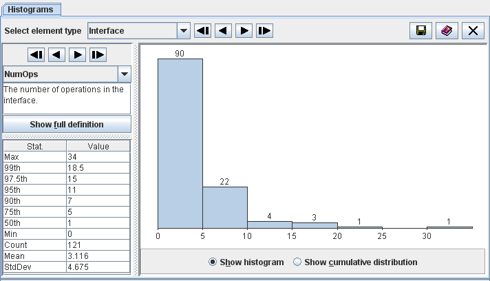
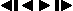

Contents > 4 The SDMetrics User Interface > 4.5 The View 'Histograms'
4.5 The View 'Histograms'
The histogram view provides a graphical representation of the distribution
of a design metric.

Figure 10: Histogram view
Select the metric to display from the dropdown list on the left control
panel, or use the  buttons
to select the first/previous/next/last metric
on the list, respectively. Press the "Show full definition" button to
view the detailed definition of the metric in the measurement catalog
(see Section 4.13 "The View 'Catalog'").
The table below the metric definition shows some descriptive
statistics for the metric:
- Max - maximum value of the metric
- xth - the xth percentile of the metric, for various
values of x
- Min - minimum value of the metric
- Count - the number of observations (UML model elements) for which
the metric was calculated
- Mean - the average value of the metric distribution
- StdDev - the standard deviation of the metric distribution
The diagram on the right shows the distribution of the selected
metric. You can choose between two types of diagrams with the radio
buttons below the diagram:
- Show histogram
The histogram is a type of bar graph that depicts the frequency of
metric values in class intervals by the length of its bars. The scale
of measurement on the horizontal axis is the range of the metric under
consideration. It is subdivided into intervals of equal width. The
plot points on the horizontal axis are the exact limits of the
interval. The height of the bar for each interval is proportional to
the number of values that fall into the interval. This number is also
shown on top of each bar.
- Show cumulative distribution
The cumulative distribution graph shows, for any value x in the
range of the metric, the percentage of model elements for which the
metric value is <=x. The scale of measurement on the
horizontal axis is the range of the metric under consideration. The
scale on the vertical axis is the percentage of elements below a given
threshold x on the horizontal axis.
If you see a "Diagram not available" message instead of a graph, the
measurement values of the selected metric are not numerical or
do not vary at all, or both. No graph is shown for such metrics.
| Prev |
Up |
Next |
| Section 4.4.1 "Highlighting Outliers" | Contents | Section 4.6 "The View 'Kiviat Diagrams'" |